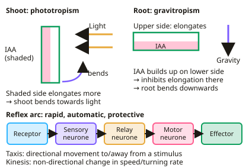

A-level Biology Year 13 · Topic 6
Organisms respond to changes in their environments
Organisms respond to changes in their environments, and this topic shows exactly how, from plant hormones to the electrical signals in your nerves.
We will look at receptors, tropisms, taxes and kineses, control of heart rate, nerve impulses and synapses, and how skeletal muscle contracts.
Then we cover homeostasis: control of blood glucose and blood water potential by the kidneys, simple reflexes, and the practical on animal movement.
- 11 subtopics
- 425 questions
- Free: 6.1 notes and 10 questions
In this topic
- 6.1Stimuli, receptors and plant responsesFree below · 34 questions
- 6.2Control of heart rateOpen in Full Marks · 63 questions
- 6.3Nervous coordinationOpen in Full Marks · 31 questions
- 6.4Skeletal muscleOpen in Full Marks · 35 questions
- 6.5Control of blood glucoseOpen in Full Marks · 69 questions
- 6.6Control of blood water potentialOpen in Full Marks · 50 questions
- 6.7Reflex arcs and simple reflexesOpen in Full Marks · 37 questions
- 6.8Practical: effect of an environmental variable on animal movement (taxis and kinesis)Open in Full Marks · 37 questions
- 6.9Neurones: sensory, relay and motor neurones, and the myelin sheathOpen in Full Marks · 21 questions
- 6.10Synapses: cholinergic synapses, neuromuscular junctions, summation and drugsOpen in Full Marks · 22 questions
- 6.11The kidney: nephron structure, ultrafiltration and selective reabsorptionOpen in Full Marks · 26 questions
6.1 · Free notes
Stimuli, receptors and plant responses

Key points
- A tropism is a growth response to a directional stimulus. In shoots, IAA moves to the shaded side and causes cell elongation, so the shoot bends towards light.
- In roots, IAA builds up on the lower side and inhibits cell elongation, so the root bends downwards (gravitropism).
- A taxis is a directional movement towards or away from a stimulus. A kinesis is a non-directional change in speed or turning rate.
- A simple reflex arc: receptor → sensory neurone → relay neurone → motor neurone → effector. Reflexes are rapid, automatic and protective.
- In a Pacinian corpuscle, pressure deforms the lamellae, opening stretch-mediated sodium ion channels. Sodium ions enter, creating a generator potential.
- Rods contain rhodopsin and give high sensitivity, because several rods connect to one bipolar neurone (spatial summation), but low visual acuity.
- Cones contain iodopsin, respond to different wavelengths for colour vision, and give high acuity because each connects to its own bipolar neurone.
In more detail
- IAA in detail: IAA is made in the shoot tip and diffuses to the shaded side; it makes cell walls more plastic by stimulating H⁺ secretion, so cells elongate more.
- Generator potential: the size depends on stimulus strength; only if it reaches threshold is an action potential produced in the sensory neurone.
- Rods vs cones: many rods share one bipolar neurone (summation) so they detect dim light but give low visual acuity; each cone has its own bipolar neurone, giving high acuity but needing bright light.
- Three types of cone are sensitive to red, green and blue wavelengths; the brain interprets combinations to give colour vision.
Practice
Stimuli, receptors and plant responses: 10 questions
Pick an answer to check it, or open the answer for the explanation.
1. In a shoot lit from one side, how does IAA cause bending towards light?
- It inhibits elongation on the shaded side
- It causes cell elongation on the shaded side
- It is destroyed by light on the shaded side
- It causes cell division on the lit side
Show answer
B: It causes cell elongation on the shaded side. IAA accumulates on the shaded side, cells there elongate more, and the shoot bends towards light.
2. Woodlice move faster and turn less in dry conditions. What kind of response is this?
- Taxis
- Tropism
- Kinesis
- Reflex
Show answer
C: Kinesis. The change in movement is non-directional, so it is a kinesis.
3. Why do rods give high sensitivity to light?
- They contain iodopsin
- Several rods share one bipolar neurone, allowing spatial summation
- They are only in the fovea
- Each has its own neurone
Show answer
B: Several rods share one bipolar neurone, allowing spatial summation. Many small generator potentials combine to reach threshold in dim light.
4. How does a Pacinian corpuscle respond to pressure?
- Calcium channels open
- Stretch-mediated sodium ion channels open
- Potassium ions enter
- Acetylcholine is released
Show answer
B: Stretch-mediated sodium ion channels open. Deformation opens stretch-mediated Na⁺ channels, producing a generator potential.
5. In a horizontal root, what does IAA do on the lower side?
- Stimulates elongation
- Inhibits elongation, so the root bends down
- Stops photosynthesis
- Causes cell death
Show answer
B: Inhibits elongation, so the root bends down. In roots IAA inhibits cell elongation, so the upper side grows more and the root curves downwards.
6. Which receptors give high visual acuity?
- Rods
- Cones
- Pacinian corpuscles
- Baroreceptors
Show answer
B: Cones. Each cone connects to a single bipolar neurone, so the brain can separate close points of light.
7. What is the correct order of a simple reflex arc?
- Receptor, motor, relay, sensory, effector
- Receptor, sensory, relay, motor, effector
- Effector, motor, relay, sensory, receptor
- Sensory, receptor, relay, effector, motor
Show answer
B: Receptor, sensory, relay, motor, effector. The impulse goes from receptor to sensory neurone, relay neurone, motor neurone and then effector.
8. Why does a shoot grown in unilateral light bend towards it?
- IAA accumulates on the light side, inhibiting growth there
- IAA accumulates on the shaded side, promoting cell elongation there
- IAA is destroyed entirely
- No hormone is involved
Show answer
B: IAA accumulates on the shaded side, promoting cell elongation there. This is an example of positive phototropism.
9. What is spatial summation?
- One neurone firing repeatedly in quick succession
- Several presynaptic neurones combining their input to reach threshold on one postsynaptic neurone
- A reflex arc
- A type of receptor
Show answer
B: Several presynaptic neurones combining their input to reach threshold on one postsynaptic neurone. This can help trigger an action potential from otherwise sub-threshold signals.
10. A shoot tip is covered with an opaque foil cap and lit from one side only. What is the most likely result?
- Bends towards the light
- Bends away from the light
- Grows straight upwards with no bending
- Stops growing completely
Show answer
C: Grows straight upwards with no bending. The tip detects the light. When it is covered, IAA stays evenly distributed, so both sides elongate equally and the shoot grows straight up. Growth does not stop.
Keep going in Full Marks
Full Marks has 34 questions on Stimuli, receptors and plant responses (24 more than here), set out in practice levels. You also get notes and 3D models for all 11 subtopics of Organisms respond to changes in their environments, plus games, timed exams and past papers.
On your exam board
- AQATopic 6: Organisms respond to changes in their internal and external environments
- OCR ATopic 5.1.2: Excretion as an example of homeostatic control, Topic 5.1.3: Neuronal communication, Topic 5.1.4: Hormonal communication, Topic 5.1.5: Plant and animal responses
- OCR BTopic 5.3: Control: nervous and hormonal communication, Topic 5.4: Homeostasis
- EdexcelTopic 9: Control systems
- CambridgeTopic 14: Homeostasis, Topic 15: Control and coordination